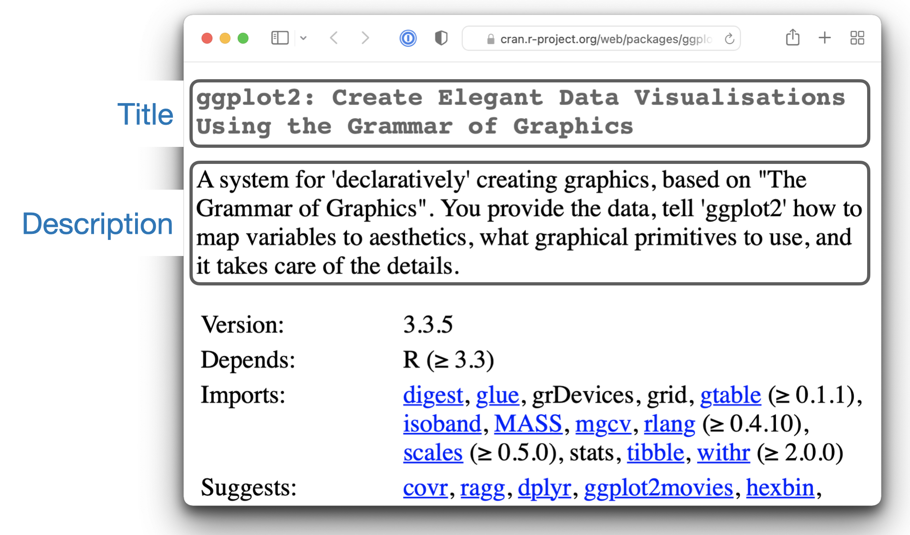

Package: mypackage
Title: What the Package Does (One Line, Title Case)
Version: 0.0.0.9000
Authors@R:
person("First", "Last", , "first.last@example.com", role = c("aut", "cre"),
comment = c(ORCID = "YOUR-ORCID-ID"))
Description: What the package does (one paragraph).
License: `use_mit_license()`, `use_gpl3_license()` or friends to pick a
license
Encoding: UTF-8
Roxygen: list(markdown = TRUE)
RoxygenNote: 7.3.29 DESCRIPTION
DESCRIPTION and NAMESPACE are two important files that provide metadata about your package. The DESCRIPTION file provides overall metadata about the package, such as the package name and which other packages it depends on. The NAMESPACE file specifies which functions your package makes available for others to use and, optionally, imports functions from other packages.
In this chapter, you’ll learn about the most important fields found in DESCRIPTION. The next two chapters cover the topic of package dependencies, which is where the importance of the NAMESPACE file will become clear. First, in Chapter 10, we discuss the costs and benefits of dependencies and also provide the relevant technical context around how R finds objects. In Chapter 11, we explain the practical moves necessary to use your dependencies within your package. The metadata part of the book concludes with Chapter 12, which covers licensing.
9.1 The DESCRIPTION file
The job of the DESCRIPTION file is to store important metadata about your package. When you first start writing packages, you’ll mostly use these metadata to record what packages are needed to run your package. However, as time goes by, other aspects of the metadata file will become useful to you, such as revealing what your package does (via the Title and Description) and whom to contact (you!) if there are any problems.
Every package must have a DESCRIPTION. In fact, it’s the defining feature of a package (RStudio and devtools consider any directory containing DESCRIPTION to be a package)1. To get you started, usethis::create_package("mypackage") automatically adds a bare-bones DESCRIPTION file. This will allow you to start writing the package without having to worry about the metadata until you need to. This minimal DESCRIPTION will vary a bit depending on your settings, but should look something like this:
If you create a lot of packages, you can customize the default content of new DESCRIPTION files by setting the global option usethis.description to a named list. You can pre-configure your preferred name, email, license, etc. See the article on usethis setup for more details.
DESCRIPTION uses a simple file format called DCF, the Debian control format. You can see most of the structure in the examples in this chapter. Each line consists of a field name and a value, separated by a colon. When values span multiple lines, they need to be indented:
Description: The description of a package usually spans multiple lines.
The second and subsequent lines should be indented, usually with four
spaces.If you ever need to work with a DESCRIPTION file programmatically, take a look at the desc package, which usethis uses heavily under-the-hood.
This chapter shows you how to use the most important DESCRIPTION fields.
9.2 Title and Description: What does your package do?
The Title and Description fields describe what the package does. They differ only in length:
-
Titleis a one line description of the package, and is often shown in a package listing. It should be plain text (no markup), capitalised like a title, and NOT end in a period. Keep it short: listings will often truncate the title to 65 characters. -
Descriptionis more detailed than the title. You can use multiple sentences, but you are limited to one paragraph. If your description spans multiple lines (and it should!), each line must be no more than 80 characters wide. Indent subsequent lines with 4 spaces.
The Title and Description for ggplot2 are:
Title: Create Elegant Data Visualisations Using the Grammar of Graphics
Description: A system for 'declaratively' creating graphics,
based on "The Grammar of Graphics". You provide the data, tell 'ggplot2'
how to map variables to aesthetics, what graphical primitives to use,
and it takes care of the details.A good title and description are important, especially if you plan to release your package to CRAN, because they appear on the package’s CRAN landing page as shown in Figure 9.1:

Submitting to CRAN
Both the Title and Description are a frequent source of rejections for reasons not covered by the automated R CMD check. In addition to the basics above, here are a few more tips:
- Put the names of R packages, software, and APIs inside single quotes. This goes for both the
Titleand theDescription. See the ggplot2 example above. - If you need to use an acronym, try to do so in
Description, not inTitle. In either case, explain the acronym inDescription, i.e. fully expand it. - Don’t include the package name, especially in
Title, which is often prefixed with the package name. - Do not start with “A package for …” or “This package does …”. This rule makes sense once you look at the list of CRAN packages by name. The information density of such a listing is much higher without a universal prefix like “A package for …”.
If these constraints give you writer’s block, it often helps to spend a few minutes reading Title and Description of packages already on CRAN. Once you read a couple dozen, you can usually find a way to say what you want to say about your package that is also likely to pass CRAN’s human-enforced checks.
You’ll notice that Description only gives you a small amount of space to describe what your package does. This is why it’s so important to also include a README.md file that goes into much more depth and shows a few examples. You’ll learn about that in Section 18.1.
9.4 URL and BugReports
As well as the maintainer’s email address, it’s a good idea to list other places people can learn more about your package. The URL field is commonly used to advertise the package’s website (Chapter 19) and to link to a public source repository, where development happens. Multiple URLs are separated with a comma. BugReports is the URL where bug reports should be submitted, e.g., as GitHub issues. For example, devtools has:
URL: https://devtools.r-lib.org/, https://github.com/r-lib/devtools
BugReports: https://github.com/r-lib/devtools/issuesIf you use usethis::use_github() to connect your local package to a remote GitHub repository, it will automatically populate URL and BugReports for you. If a package is already connected to a remote GitHub repository, usethis::use_github_links() can be called to just add the relevant links to DESCRIPTION.
9.5 The License field
The License field is mandatory and must specify your package’s license in a standard form recognized by R. The official tooling aims to identify standard open source licenses, so it’s important to appreciate that License is basically a machine-readable field. See Chapter 12 for a full discussion.
9.6 Imports, Suggests, and friends
Two of the most important and commonly used DESCRIPTION fields are Imports and Suggests, which list other packages that your package depends on. Packages listed in Imports are needed by your users at runtime and will be installed (or potentially updated) when users install your package via install.packages(). The following lines indicate that your package absolutely needs both dplyr and tidyr to work.
Imports:
dplyr,
tidyrPackages listed in Suggests are either needed for development tasks or might unlock optional functionality for your users. The lines below indicate that, while your package can take advantage of ggplot2 and testthat, they’re not absolutely required:
Suggests:
ggplot2,
testthatBoth Imports and Suggests take a comma-separated list of package names. We recommend putting one package on each line, and keeping them in alphabetical order. A non-haphazard order makes it easier for humans to parse this field and appreciate changes.
The easiest way to add a package to Imports or Suggests is with usethis::use_package(). If the dependencies are already in alphabetical order, use_package() will keep it that way. In general, it can be nice to run usethis::use_tidy_description() regularly, which orders and formats DESCRIPTION fields according to a fixed standard.
If you add packages to DESCRIPTION with usethis::use_package(), it will also remind you of the recommended way to call them (explained more in Chapter 11).
usethis::use_package("dplyr") # Default is "Imports"
#> ✔ Adding 'dplyr' to Imports field in DESCRIPTION
#> • Refer to functions with `dplyr::fun()`
usethis::use_package("ggplot2", "Suggests")
#> ✔ Adding 'ggplot2' to Suggests field in DESCRIPTION
#> • Use `requireNamespace("ggplot2", quietly = TRUE)` to test if package is installed
#> • Then directly refer to functions with `ggplot2::fun()`9.6.1 Minimum versions
If you need a specific version of a package, specify it in parentheses after the package name:
Imports:
dplyr (>= 1.0.0),
tidyr (>= 1.1.0)The usethis::use_package() convenience function also helps you to set a minimum version:
# exact version
usethis::use_package("dplyr", min_version = "1.0.0")
# min version = currently installed version
usethis::use_package("dplyr", min_version = TRUE)You always want to specify a minimum version (dplyr (>= 1.0.0)) rather than an exact version (dplyr (== 1.0.0)). Since R can’t have multiple versions of the same package loaded at the same time, specifying an exact dependency dramatically increases the chance of conflicting versions2.
Versioning is most important if you will release your package for use by others. Usually people don’t have exactly the same versions of packages installed that you do. If someone has an older package that doesn’t have a function your package needs, they’ll get an unhelpful error message if your package does not advertise the minimum version it needs. However, if you state a minimum version, they’ll automatically get an upgrade when they install your package.
Think carefully if you declare a minimum version for a dependency. In some sense, the safest thing to do is to require a version greater than or equal to the package’s current version. For public work, this is most naturally defined as the current CRAN version of a package; private or personal projects may adopt some other convention. But it’s important to appreciate the implications for people who try to install your package: if their local installation doesn’t fulfill all of your requirements around versions, installation will force upgrades of these dependencies. This is desirable if your minimum version requirements are genuine, i.e. your package would be broken otherwise. But if your stated requirements have a less solid rationale, this may be unnecessarily conservative and inconvenient.
In the absence of clear, hard requirements, you should set minimum versions (or not) based on your expected user base, the package versions they are likely to have, and a cost-benefit analysis of being too lax versus too conservative. The de facto policy of the tidyverse team is to specify a minimum version when using a known new feature or when someone encounters a version problem in authentic use. This isn’t perfect, but we don’t currently have the tooling to do better, and it seems to work fairly well in practice.
9.6.2 Depends and LinkingTo
There are three other fields that allow you to express more specialised dependencies:
-
Depends: Prior to the roll-out of namespaces in R 2.14.0 in 2011,Dependswas the only way to “depend” on another package. Now, despite the name, you should almost always useImports, notDepends. You’ll learn why, and when you should still useDepends, in Section 10.4.1.The most legitimate current use of
Dependsis to state a minimum version for R itself, e.g.Depends: R (>= 4.0.0). Again, think carefully if you do this. This raises the same issues as setting a minimum version for a package you depend on, except the stakes are much higher when it comes to R itself. Users can’t simply consent to the necessary upgrade, so, if other packages depend on yours, your minimum version requirement for R can cause a cascade of package installation failures.- The backports package is useful if you want to use a function like
tools::R_user_dir(), which was introduced in 4.0.0 in 2020, while still supporting older R versions. - The tidyverse packages officially support the current R version, the devel version, and four previous versions.3 We proactively test this support in the standard build matrix we use for continuous integration.
- Packages with a lower level of use may not need this level of rigour. The main takeaway is: if you state a minimum of R, you should have a reason and you should take reasonable measures to test your claim regularly.
- The backports package is useful if you want to use a function like
LinkingTo: if your package uses C or C++ code from another package, you need to list it here.Enhances: packages listed here are “enhanced” by your package. Typically, this means you provide methods for classes defined in another package (a sort of reverseSuggests). But it’s hard to define what that means, so we don’t recommend usingEnhances.
9.6.3 An R version gotcha
Before we leave this topic, we give a concrete example of how easily an R version dependency can creep in and have a broader impact than you might expect. The saveRDS() function writes a single R object as an .rds file, an R-specific format. For almost 20 years, .rds files used the “version 2” serialization format. “Version 3” became the new default in R 3.6.0 (released April 2019) and cannot be read by R versions prior to 3.5.0 (released April 2018).
Many R packages have at least one .rds file lurking within and, if that gets re-generated with a modern R version, by default, the new .rds file will have the “version 3” format. When that R package is next built, such as for a CRAN submission, the required R version is automatically bumped to 3.5.0, signaled by this message:
NB: this package now depends on R (>= 3.5.0)
WARNING: Added dependency on R >= 3.5.0 because serialized objects in
serialize/load version 3 cannot be read in older versions of R.
File(s) containing such objects:
'path/to/some_file.rds'Literally, the DESCRIPTION file in the bundled package says Depends: R (>= 3.5.0), even if DESCRIPTION in the source package says differently4.
When such a package is released on CRAN, the new minimum R version is viral, in the sense that all packages listing the original package in Imports or even Suggests have, to varying degrees, inherited the new dependency on R >= 3.5.0.
The immediate take-away is to be very deliberate about the version of .rds files until R versions prior to 3.5.0 have fallen off the edge of what you intend to support. This particular .rds issue won’t be with us forever, but similar issues crop up elsewhere, such as in the standards implicit in compiled C or C++ source code. The broader message is that the more reverse dependencies your package has, the more thought you need to give to your package’s stated minimum versions, especially for R itself.
9.7 Other fields
A few other DESCRIPTION fields are heavily used and worth knowing about:
Versionis very important as a way of communicating where your package is in its lifecycle and how it is evolving over time. Learn more in Chapter 21.LazyDatais relevant if your package makes data available to the user. If you specifyLazyData: true, the datasets are lazy-loaded, which makes them more immediately available, i.e. users don’t have to usedata(). The addition ofLazyData: trueis handled automatically byusethis::use_data(). More detail is given in Chapter 7.Encodingdescribes the character encoding of files throughout your package. Our tooling will set this toEncoding: UTF-8as this is the most common encoding in use today, and we are not aware of any reasons to use a different value.Collatecontrols the order in which R files are sourced. This only matters if your code has side-effects; most commonly because you’re using S4. If needed,Collateis typically generated by roxygen2 through use of the@includetag. See?roxygen2::update_collatefor details.VignetteBuilderlists any package that your package needs as a vignette engine. Our recommended vignette workflow is described in Section 17.1, which will list the knitr package inVignetteBuilder.-
SystemRequirementsis where you describe dependencies external to R. This is a plain text field and does not, for example, actually install or check for anything, so you might need to include additional installation details in your README (Section 18.1). The most common usage is in the context of a package with compiled code, whereSystemRequirementsis used to declare the C++ standard, the need for GNU make, or some other external dependency. Examples:SystemRequirements: C++17 SystemRequirements: GNU make SystemRequirements: TensorFlow (https://www.tensorflow.org/)
We discourage the explicit use of the Date field, as it is extremely easy to forget to update it if you manage Date by hand. This field will be populated in the natural course of bundling the package, e.g. when submitting to CRAN, and we recommend that you just let that happen.
There are many other DESCRIPTION fields that are used less frequently. A complete list can be found in the “The DESCRIPTION file” section of Writing R Extensions.
9.8 Custom fields
There is also some flexibility to create your own fields to add additional metadata. In the narrowest sense, the only restriction is that you shouldn’t re-purpose the official field names used by R. You should also limit yourself to valid English words, so the field names aren’t flagged by the spell-check.
In practice, if you plan to submit to CRAN, we recommend that any custom field name should start with Config/. We’ll revisit this later when we explain how Config/Needs/website is used to record additional packages needed to build a package’s website (Section 11.7).
You might notice that create_package() writes two more fields we haven’t discussed yet, relating to the use of the roxygen2 package for documentation:
Roxygen: list(markdown = TRUE)
RoxygenNote: 7.2.1You will learn more about these in Chapter 16. The use of these specific field names is basically an accident of history and, if it were re-done today, they would follow the Config/* pattern recommended above.
The relationship between “has a
DESCRIPTIONfile” and “is a package” is not quite this clear-cut. Many non-package projects use aDESCRIPTIONfile to declare their dependencies, i.e. which packages they rely on. In fact, the project for this book does exactly this! This off-label use ofDESCRIPTIONmakes it easy to piggy-back on package development tooling to install all the packages necessary to work with a non-package project.↩︎The need to specify the exact versions of packages, rather than minimum versions, comes up more often in the development of non-package projects. The renv package provides a way to do this, by implementing project-specific environments (package libraries). renv is a reboot of an earlier package called packrat. If you want to freeze the dependencies of a project at exact versions, use renv instead of (or possibly in addition to) a
DESCRIPTIONfile.↩︎See this blog post for more: https://www.tidyverse.org/blog/2019/04/r-version-support/.↩︎
The different package states, such as source vs. bundled, are explained in Section 3.1.↩︎